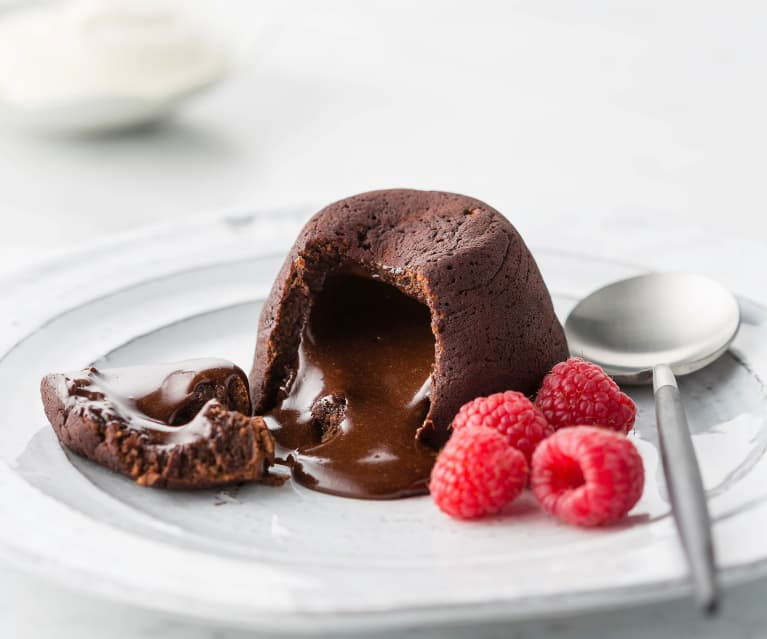

Lava Cake

Description
Molten chocolate cake is a French dessert that consists of a chocolate cake with a liquid chocolate core. It is named for that molten center, and it is also known as mi-cuit au chocolat, chocolat coulant, chocolate lava cake, or simply lava cake.
Ingredients
- 2 tbsp Flour
- 100 g Butter
- 250 g Dark Chocolate
- 2 Eggs
- 2 Egg Yolks
- 50 g Sugar
- 1 tsp Vanilla Extract
- Pinch of Salt
Steps
- Preheat oven to 450°F. Butter and lightly flour four 6-ounce ramekins. Tap out excess flour. Set the ramekins on a baking sheet.
- In a double boiler, over simmering water, melt butter with chocolate.
- In a medium bowl, beat eggs with egg yolks, sugar, and salt at high speed until thickened and pale.
- Whisk melted chocolate until smooth.
- Quickly fold it into egg mixture, along with flour.
- Spoon batter into prepared ramekins and bake for 12 minutes, or until sides of cakes are firm but centers are soft.
- Let cakes cool in ramekins for 1 minute, then cover each with an inverted dessert plate. Carefully turn each cake over, let stand for 10 seconds, and then unmold. Serve immediately.
Go back to Home Page